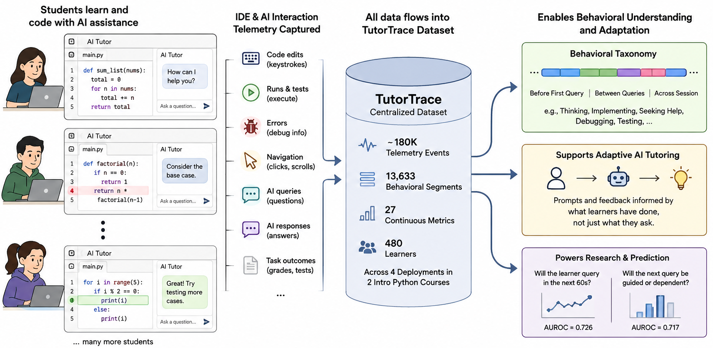
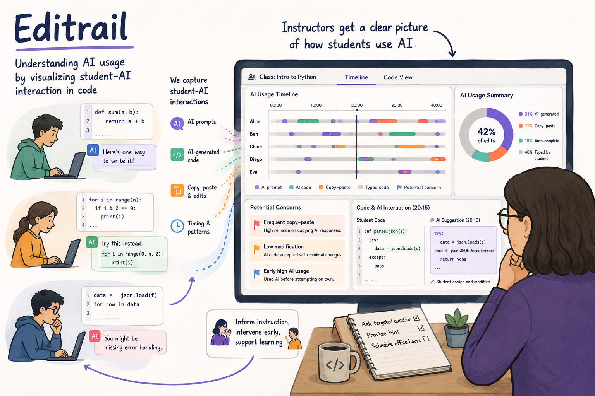
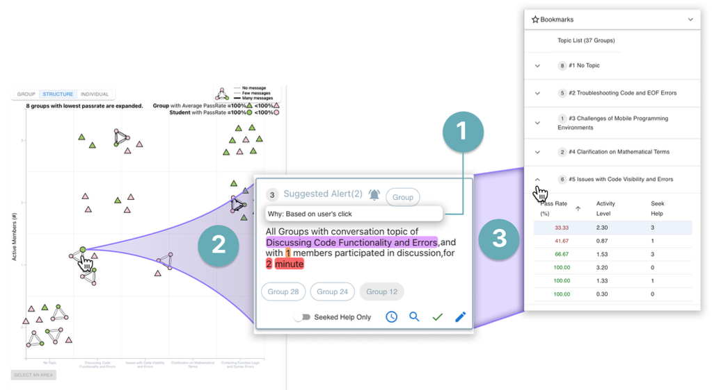
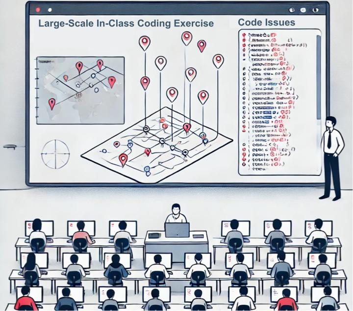
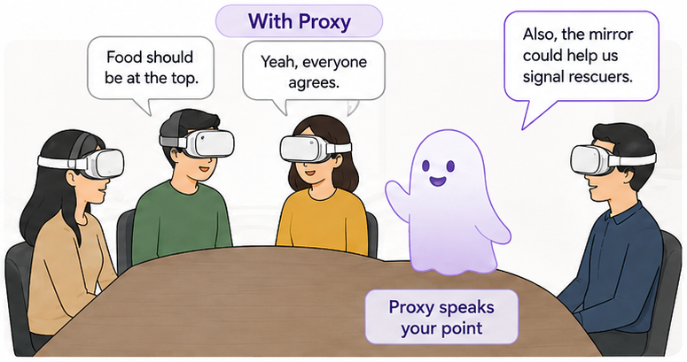
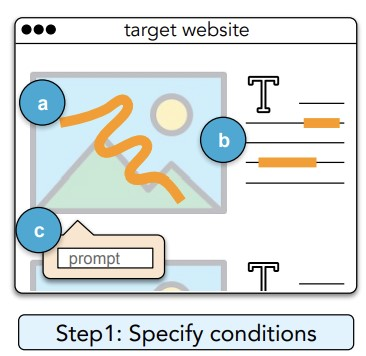
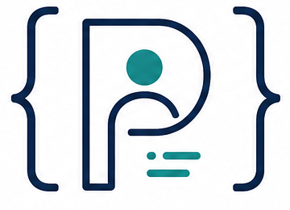
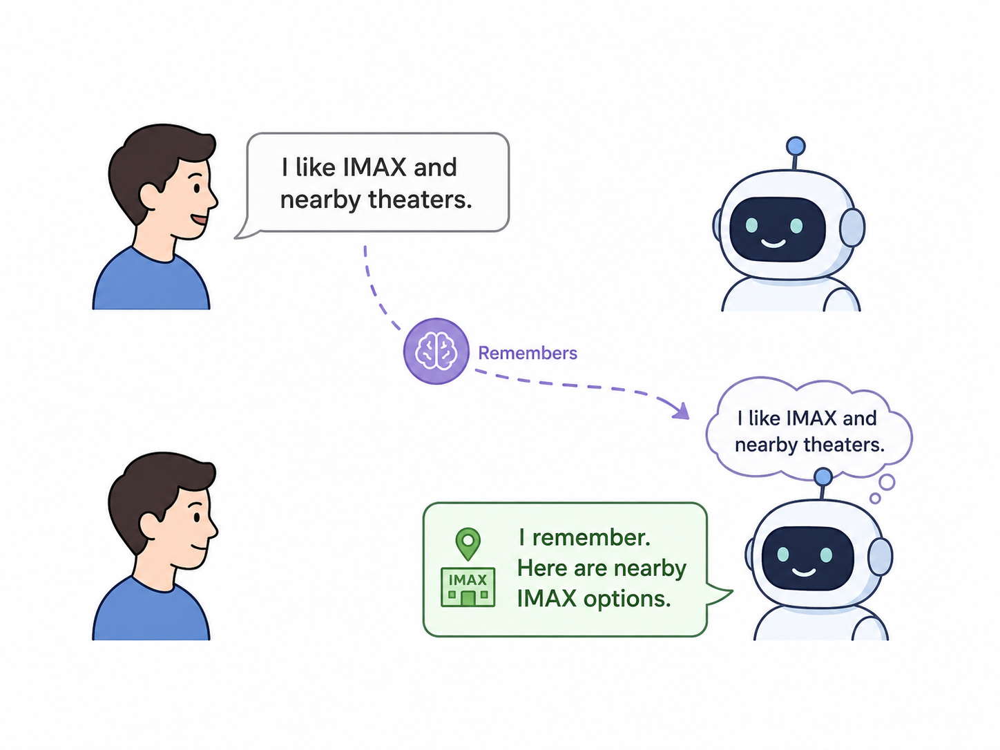

Learning with AI
How can AI accelerate learning without taking over the cognitive work required to build durable expertise?
I build and study human-AI systems that help people learn, reason, and collaborate at scale while preserving the human thinking that develops expertise.
PRIME studies this question across individual learning, collective intelligence, and human judgment. Our goal is AI that expands what people can do without removing the thinking that helps them grow.
How can AI accelerate learning without taking over the cognitive work required to build durable expertise?
How can AI help instructors and teams understand, support, and coordinate many people at once?
When should AI automate, when should people verify, and how should systems direct scarce human attention?
Our research combines behavioral telemetry, human-centered design, and classroom deployment in a repeatable cycle.
Flagship projects that reveal how people learn with AI, how instructors make sense of activity at scale, and how interactive systems can preserve meaningful human agency.






Developing new systems and research infrastructure for collaborative learning with Cliff Shaffer, Sang Won Lee, and Gary Kirk. NSF Award 2551552
Yan Chen is an Assistant Professor of Computer Science at Virginia Tech, where he directs the Programming with Intelligent Machines & Environments Lab (PRIME). He is also an Assistant Director of the Center for Human-Computer Interaction. His research appears at ACM CHI, UIST, CSCW, L@S, and related venues.
PRIME is a human-computer interaction research group developing human-AI systems for learning, collaboration, and knowledge work.

Publications

Listen to a two-host podcast about VizGroup. The content is generated by NotebookLM, and verified by the authors.
VizProg presents an innovative, real-time visualization system that meaningfully displays class-wide students' coding progress, making it simple for programming instructors to pinpoint issues and mistakes.
Thoughts: The challenge of delivering programming education at scale is exacerbated by factors such as real-time instruction, a large student population, novice learners, and the complexity of the material being taught. To enhance the classroom experience for students and simplify the task for instructors, how can we make programming education more engaging and manageable?
SemanticOn enables users to specify visual and textual semantic conditions in web automation programs by natural language description and content highlighting.
Thoughts: SemanticOn only considers 1-1 mapping between user intents and UI actions. How can we support other kinds of mappings? How can we design PbD systems are more trustworthy?
To scale programming support in a large live classroom, PuzzleMe coordinates students to help each other by exchanging test cases and problem-solving approaches for coding exercises.
Teleoperators can use Mimic to program robots by demonstration and reuse demonstrations in new context
Asteroids explores a new space of remote physical task learning via telepresence robots
Explores the motivations/barriers/opportunities of live streaming programming as compared to pre-recorded video through interviews with 14 streamers & 12 viewers.
Thoughts: What can we do to enhance the learning experience in an online environment by adopting the in-person social features that a physical library has? What can be done to support different social needs in an online learning context in order to enhance learning outcomes?
Umitation enables web developers to perform "copy-and-paste" (retarget) interaction on web front-end UI behaviors with a trigger-object-response framework.
CoCapture allows designers to create UI behavior mockups on existing web interfaces by demonstrating and remixing, and to accurately describe their requests to developers by referencing the resulting mockups using hypertext.
Bashon introduces a crowdsourcing approach to help make program synthesis systems more robust, reliable, and trustworthy, and reduces the cost of downstream data collection for training a program synthesis system.
EdCode applies a semi-asychronous on-demand help seeking model in a learning setting, aiming towards provide more personalized support at scale.
Two techniques, interactive event-flow graphs and GUI-level guidance, that guide GUI testers to discover more test cases and avoid duplicate test cases.
Sifter improves the video curation process by combining automated techniques with a human-powered two-stage pipeline that browses, selects, and reaches an agreement.
CodeOn enables effective task hand-offs between developers and remote helpers by allowing asynchronous responses to on-demand requests.
Explore the types and causes of the coordination costs for transient software teams when using existing collaborative programming tools: a VCS and a shared editor.
Two studies that present the opportunities and the design recommendations of on-demand remote support systems for developers.
Other Publications